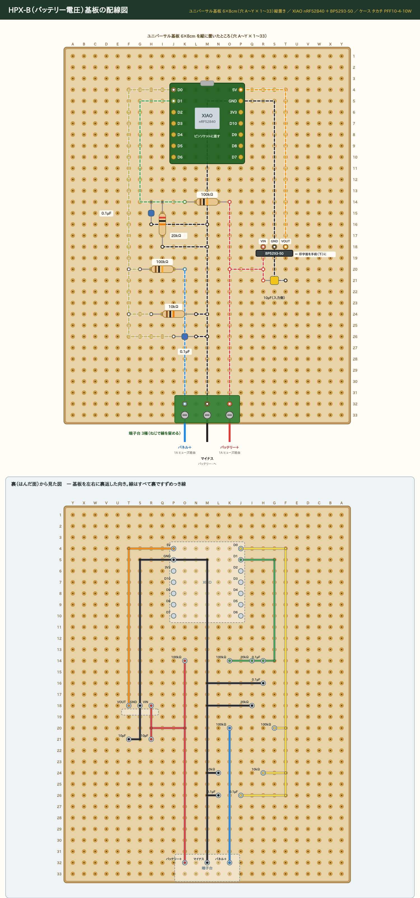

バッテリー電圧
部品表
必要な部品と数です。
| 部品 | 購入店 | 数 |
|---|---|---|
| チップボード | ||
| nRF52840Seeed XIAO BLE nRF528401,780円 | 秋月電子通商 | 1 |
| 電子部品 | ||
| 抵抗 100kΩ小型 金属皮膜抵抗 1/4W100kΩ300円 / 100本入り | 秋月電子通商 | 2 |
| 抵抗 20kΩ小型 金属皮膜抵抗 1/4W20kΩ250円 / 100本入り | 秋月電子通商 | 1 |
| 抵抗 10kΩ小型 金属皮膜抵抗 1/4W 10kΩ (100本入り)300円 / 100本入り | 秋月電子通商 | 1 |
| コンデンサー0.1μF積層セラミックコンデンサー 0.1μF50V C0G 5mm250円 / 10個入り | 秋月電子通商 | 2 |
| コンデンサー 10μF積層セラミックコンデンサー 10μF50V X7S 5mm (BP5293-50 の入力側)60円 | 秋月電子通商 | 1 |
| 端子台 3極基板用ねじ式端子台 3P 5.08mm ターミナルブロック 3P 緑 縦40円 | 秋月電子通商 | 1 |
| ピンソケット（メス）シングルピンソケット (低メス)80円 / 20PIN | 秋月電子通商 | 7PIN×2 |
| ピンヘッダー（オス）ロープロファイルピンヘッダー(低オス) 7.7mm40円 / 40PIN | 秋月電子通商 | 7PIN×2 |
| ジャンパー線スズメッキ軟銅線 TCW 0.5mm 10m670円 / 10m | amazon | 適宜 |
| 電源 | ||
| 三端子DCDCレギュレーター 5VROHM BP5293-50 (入力 7〜26V、出力 5V 1A)240円 | 秋月電子通商 | 1 |
| ケース | ||
| 壁付ネットワークケース PFFシリーズタカチ PFF10-4-10W639円 | モノタロウ | 1 |
| ケース用基板 | ||
| ユニバーサル基板 6×8cm695円 / 5枚入り | amazon | 1 |
| 部材 | ||
| 基板スペーサー ナット入り貼付スペーサー ASTシリーズタカチ AST2.5-5B219円 | モノタロウ | 1 |
| ケーブル | ||
| ミニ平型ヒューズホルダーエーモン ミニ平型ヒューズホルダー (線の途中に入れる)415円 | amazon | 2 |
| ミニ平型ヒューズ 1Aミニ平型ヒューズ 1A (ARISELIFT)567円 / 5個入り | amazon | 2 |
| 電線 0.3〜0.5mm²サンコー電商 AWG20 【6色】 UL1015 耐熱ビニル絶縁電線 (コントローラーの端子から端子台まで)980円 | amazon | 適宜 |
| 部品代の目安 (1台分) | 約 4,305円 | |
その他
※パネル電圧は、ソーラーチャージャー（充電コントローラー）の「パネル−」と「バッテリー−」がつながっている（マイナス共通）機種でだけ測れます。「パネル＋」と「バッテリー＋」がつながっている（プラス共通）機種では、パネル＋の線をつながずにバッテリーの電圧だけを測ります（パネル用の抵抗・コンデンサーとヒューズは省いてかまいません）。どちらの型かは、コントローラーの線を外し、テスターの導通モードで確かめてください。どちらの型でも、マイナスの線は「バッテリー−」につなぎ、「パネル−」にはつながないでください。ファームウェアは準備中です。
作り方
図を押すと、大きな画像が開きます。どの図もまだ実物で組んで確かめていません。取付穴の位置は目安なので、部品と基板の実物で確かめてから組み立ててください。

つなぐ線（穴の位置は 列の文字＋行の数字）
| 線 | どこから（穴） | 通る穴 | どこへ（穴） |
|---|---|---|---|
| 赤 | 端子台 バッテリー＋（O32） | O32 → O20 → O14 | 100kΩ の右の足（O14） |
| 赤 | （とちゅうの O20） | O20 → R20 → R18（R20 → R21 も） | BP5293 VIN（R18）・10µF（R21） |
| 橙 | BP5293 VOUT（T18） | T18 → T4 → P4 | XIAO 5V（P4） |
| 黒 | 端子台 マイナス（M32） | M32 → M5 → P5 → S5 → S18 → S21 → T21 | XIAO GND（P5）・BP5293 GND（S18）・10µF（T21） |
| 黒 | 0.1µF・20kΩ・10kΩ・0.1µF の下の足 | H16→M16、I18→M18、L24→M24、L26→M26 | マイナスの線（M 列） |
| 緑 | XIAO D1/A1（J5） | J5 → G5 → G14 → K14 | 0.1µF（H14）・20kΩ（I14）・100kΩ（K14） |
| 青 | 端子台 パネル＋（K32） | K32 → K20 | 100kΩ の右の足（K20） |
| 黄 | XIAO D0/A0（J4） | J4 → F4 → F26 → J26（F20→G20、F24→H24 も） | 100kΩ（G20）・10kΩ（H24）・0.1µF（J26） |
部品の置き場所
| 部品 | 数 | 置き場所・メモ |
|---|---|---|
| Seeed XIAO BLE nRF52840 ＋ ピンヘッダ 7ピン×2（XIAO 側）＋ ピンソケット 7ピン×2（基板側） | 1 | J4〜J10・P4〜P10。USB-C を上に向ける |
| 三端子 DCDC レギュレーター ROHM BP5293-50（入力 7〜26V、5V 1A） | 1 | R18・S18・T18（印字面を手前（下）に向けて左から VIN・GND・VOUT）。立てて付ける |
| 積層セラミックコンデンサー 10µF 50V 5mm | 1 | R21・T21（BP5293 の入力側。なくても動くが付けると安定する） |
| 金属皮膜抵抗 100kΩ 1% | 2 | K14〜O14（バッテリー用）、G20〜K20（パネル用）。寝かせて付ける |
| 金属皮膜抵抗 20kΩ 1% | 1 | I14〜I18（バッテリー用） |
| 金属皮膜抵抗 10kΩ 1% | 1 | H24〜L24（パネル用） |
| 積層セラミックコンデンサー 0.1µF 50V 5mm | 2 | H14〜H16（バッテリー用）、J26〜L26（パネル用） |
| 端子台 3極 5.08mm（基板用、ねじ式） | 1 | K32・M32・O32（左から パネル＋・マイナス・バッテリー＋） |
| ミニ平型ヒューズホルダー（線の途中に入れる）＋ 1A ミニ平型ヒューズ | 2 | バッテリー＋とパネル＋の線に1つずつ。コントローラーの端子のすぐ近くに |
| 線 0.3〜0.5mm²（AWG20、赤・青・黒） | 少し | コントローラーのバッテリー＋・パネル＋・バッテリー− から端子台まで |
| ユニバーサル基板 6×8cm（穴 25×33）・すずめっき線 | 1 | 縦に置く。線はすべて裏 |
| ケース タカチ PFF10-4-10W（壁掛け、内側 約 67×90mm） | 1 | 基板はスペーサーで浮かせて留める。線を通す穴をあける |
注意
- 上の図は部品を載せる面（表）から見たところ。部品はすべて表から差し、足を裏ではんだ付けする。
- 線はすべて裏（はんだ面）で、すずめっき線を穴から穴へはんだ付けしてつなぐ。下の「裏から見た図」が実際に配線する向き（左右が逆）。
- 裏の線どうしは交わらない。100kΩ（K14〜O14）・10kΩ・0.1µF（J26〜L26）は、裏の線（黒・青）の上をまたいで付ける（表と裏なので触れない）。
- バッテリーは 100kΩ と 20kΩ で 1/6 に（18V で 3.0V）、パネルは 100kΩ と 10kΩ で 1/11 に（33V で 3.0V）下げて XIAO で読む。
- ヒューズはコントローラーの端子のすぐ近くに入れる（線がショートしたときの火事よけ）。基板の上には載せない。
- マイナスはコントローラーの「バッテリー−」につなぐ。「パネル−」には絶対につながない（プラス共通のコントローラーでは、充電のスイッチを飛ばしてしまい充電が止まらなくなる）。
- パネル電圧は「パネル−」と「バッテリー−」がつながっている（マイナス共通）コントローラーでだけ測れる。「パネル＋」と「バッテリー＋」がつながっている（プラス共通）コントローラーでは、パネル＋の線をつながない（パネル用の抵抗・コンデンサーとヒューズは省いてよい）。つながないとパネルは 0V になり「未接続」として扱う。どちらの型かは、コントローラーの線を外してテスターの導通モードで確かめる。
- USB で書き込むときは、端子台の線を外すかバッテリー＋のヒューズを抜く（5V が USB とぶつからないように）。
- BP5293-50 の足の並び（VIN・GND・VOUT）は、差す前に秋月の資料（データシート）の図で確かめる。逆に差すと壊れる。
- BP5293-50 の入力は 26V まで。バッテリー（充電中でも 15V くらい）にはつないでよいが、パネル＋には絶対につながない（開放電圧 23.5V、寒い日はもっと上がる）。
組み立ての手順は、準備ができしだい掲載します。
機器の一覧へ戻る